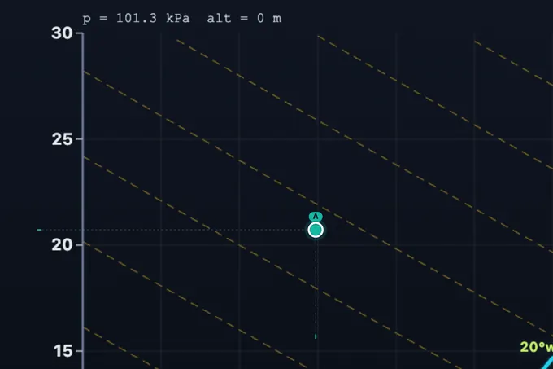
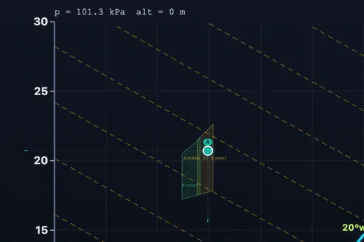
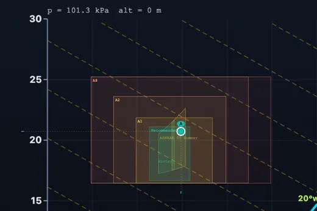

Interactive Psychrometric Chart Calculator
3D Model — Interactive Psychrometric Chart Calculator
Free online interactive psychrometric chart with ASHRAE-grade math — click any point for dry bulb, wet bulb, dew point, RH, humidity ratio, enthalpy & specific volume. SI/IP, altitude-corrected.
Interactive ASHRAE-grade moist-air properties • Click any point • HVAC processes • Coil sizing • Comfort & data-center overlays — Simulate • Explore • Practice • Quiz
i Live Equations — ASHRAE Ch. 1 (Hyland-Wexler)
Industrial Modules
Sizes a cooling coil using the canonical Outdoor → Mix → Coil → Supply path. Computes RSHF, GSHF, apparatus dew point (ADP) by extending the coil line to saturation, bypass factor & total tonnage.
Outdoor Air (OA)
Return Air (RA)
Room Loads
Targets
User Guide & Documentation
1 Overview
The Psychrometric Chart Calculator is a professional-grade tool for engineers, technicians, and students who need accurate moist-air properties for HVAC, industrial drying, evaporative cooling, cooling-tower work, data centers, museum/archive conservation and building science. Math is implemented per ASHRAE Handbook of Fundamentals Chapter 1 (Hyland-Wexler saturation pressure with the correct ice/water split at 0 °C).
Four modes — Simulate for free-form chart exploration and property lookup; Explore for theory; Practice for unlimited drill; Quiz for a graded 5-question assessment with star rating.
2 Configuring the System
The chart loads with one state point at 25 °C / 50% RH (sea-level pressure, SI units). Click anywhere on the chart to drop or move the active point; or type any two of Tdb, Twb, Tdp, RH, W, h directly into the Properties panel and the rest update automatically. Use the SI/IP toggle (top-right) at any time — internal math stays in SI; only the display changes.
3 Running the Cycle
Chart Explorer. Click to drop a point. Drag to move. Use the “+ Add Point” button for up to 5 labelled points (A – E). Select the active point from the dropdown to edit its properties.
Overlays. Toggle constant wet-bulb, enthalpy and specific-volume lines. The Comfort overlay shades the ASHRAE 55 summer/winter zones; the Data Center overlay shows the ASHRAE TC 9.9 A1 – A4 envelopes used to assess server-room conditioning.
HVAC processes. Pick a process tab. Sensible heat/cool draws a horizontal line. Steam humidification climbs vertically (constant Tdb). Evaporative humidification follows the constant wet-bulb line. Dehumidification follows the room sensible-heat ratio to the coil ADP. Mixing computes the mass-weighted state of two airstreams.
Loads. Set the air mass flow ṁa in the bottom card. The tool then reports sensible, latent and total load for the current process — preventing the common per-unit-mass error where users multiply by total CFM but forget to divide by the dry-air specific mass.
4 The Underlying Theory
Four tabs: Basics (what the seven properties mean and why), Formulas (saturation pressure with ice/water split, humidity ratio, enthalpy, wet-bulb iterative solver), Applications (HVAC coil sizing, cooling towers, drying, data centers, museums), Standards (ASHRAE 55, TC 9.9, ISO 7730, altitude correction).
5 Try a Problem
Practice draws a random state and asks you to compute a missing property. Tolerance is ±0.3 °C for temperatures and ±2% for moisture ratios — matching engineering practice. Score tracks running correct/total.
Quiz is 5 multiple-choice questions covering property identification, process direction on the chart, comfort zone reading and altitude effects. Final result shows a star rating (1 – 5 stars).
6 Altitude & Pressure
The humidity ratio relation W = 0.621945·pw/(p − pw) is explicitly pressure-dependent. A standard sea-level chart misreads moisture at altitude — the error at Denver (~1610 m, ~83 kPa) is roughly 20%. Use the Altitude slider to set the station elevation; the Pressure slider follows the ASHRAE altitude relation. A warning appears above 750 m. Internal math always uses your selected pressure, so all properties remain correct.
7 SI vs IP Units
Toggle at top-right. SI: °C, kJ/kg dry air, kPa, kg/kg, m³/kg, m. IP: °F, Btu/lb dry air, inHg, gr/lb (grains per pound), ft³/lb, ft. All conversions are exact; internal state remains in SI base units so re-toggling never drifts.
8 Engineering Notes & Pitfalls
- (Twb, Tdp) pair. Mathematically valid but ill-conditioned near saturation — the solver shows a warning. Prefer pairs that include Tdb.
- Below 0 °C. The tool automatically switches to the ASHRAE 7-constant form over ice and uses the sublimation latent heat (2830 kJ/kg) in the wet-bulb formula. Defrost and refrigeration calculations are accurate.
- Wet-bulb vs adiabatic saturation. These match within 0.1 °C in normal HVAC range; the tool returns the thermodynamic (adiabatic saturation) wet-bulb — the canonical ASHRAE definition.
- Supersaturation / fog. RH > 100% is clipped to saturation; the tool does not render a fog region.
- Mass flow. All load equations are per unit mass of dry air. Set ṁa in the dedicated card to get total loads.
9 Validation
Saturation pressure, humidity ratio, enthalpy and wet-bulb match the CoolProp reference implementation (which traces to ASHRAE RP-1485 / Hyland-Wexler) to within display precision over the entire chart range (−10 to 50 °C, 0 – 100% RH, sea level to 3000 m).
Psychrometric Chart Calculator — Theory, Use Cases & Worked Examples

First time I taught psychrometrics, I covered five property lines on the same chart and watched the class fog over. What worked: spend the whole first lesson on just dry-bulb and humidity ratio — locate state points, nothing else. Add wet-bulb the next day. Enthalpy later. By the end of the week the chart is no longer a mess of curves; it's a map. Tools that show all five at once make this harder, not easier, for beginners. Use the layer toggles deliberately.
What a psychrometric chart actually shows
A psychrometric chart is a two-dimensional map of moist air. Pick any two independent properties — usually dry-bulb temperature and either relative humidity or wet-bulb temperature — and every other property (dew point, humidity ratio, enthalpy, specific volume, density) is fixed. For a fixed barometric pressure, two intensive properties determine the state of moist air completely; this is the Gibbs phase rule applied to a single-phase binary mixture of dry air and water vapor.
The chart's seven everyday properties are: dry-bulb temperature (the ordinary thermometer reading), wet-bulb temperature (a wetted-wick thermometer in moving air, simulated thermodynamically by adiabatic saturation), dew point (the temperature at which condensation starts), relative humidity (ratio of water-vapor partial pressure to saturation pressure), humidity ratio W (kilograms of water vapor per kilogram of dry air), enthalpy h (kJ per kilogram of dry air), and specific volume v (cubic metres per kilogram of dry air).
How the math actually works
This tool implements ASHRAE Handbook of Fundamentals Chapter 1 verbatim. Saturation pressure of water vapor is computed by the Hyland-Wexler equations — a seven-constant logarithmic form for ice (−100 to 0 °C) and a six-constant form for liquid water (0 to 200 °C). The split at 0 °C is not cosmetic: the latent heat used in the thermodynamic wet-bulb equation jumps from 2501 kJ/kg (vaporization) to 2830 kJ/kg (sublimation = vaporization + 334 kJ/kg fusion) and the condensate specific heat changes from 4.186 kJ/kg·K (liquid water) to 2.1 kJ/kg·K (ice). Tools that omit this split misread refrigeration and frost-protection problems by several percent.
Humidity ratio is W = 0.621945·pw/(p − pw), where 0.621945 is the molecular-mass ratio Mwater/Mdry air. Older textbooks round to 0.622 or 0.62198 — same physics, lower precision. Specific enthalpy is h = 1.006·t + W·(2501 + 1.86·t) in SI (kJ per kg dry air), or h = 0.240·t + W·(1061 + 0.444·t) in IP (Btu/lb dry air).

Industrial use cases this tool is built for
HVAC cooling-coil sizing is the classic application. Outdoor air mixes with return air at a mass-weighted state; the mixed stream enters the coil and exits along the room sensible-heat ratio (RSHF) line, with the coil’s effective surface temperature (apparatus dew point, ADP) found by extending the process line to the saturation curve. The bypass factor BF = (Tcoil,out − TADP) / (Tcoil,in − TADP) tells you how close the coil approaches ideal. Evaporative cooling follows the constant wet-bulb line — the air’s dry-bulb drops and humidity ratio climbs along a line of constant adiabatic saturation. Cooling tower analysis uses approach (Twater,out − Twb,in) and range to size makeup-water systems. Industrial drying (food, lumber, textile) lives on the chart because the rate of moisture removal depends on the vapor-pressure difference between product and conditioned air.
In data centers, the ASHRAE TC 9.9 envelopes (Class A1 through A4) prescribe allowable temperature/humidity windows for server hardware. Overlay these and verify that economizer and humidification strategies keep operation inside the envelope year-round. In pharma cleanrooms and museum archives the chart provides the design point for narrow humidity windows (35 – 55% RH typical for paper conservation; ISO 14644 humidity bands for cleanrooms).

Why altitude correction is non-negotiable
Because W depends explicitly on barometric pressure, a sea-level chart cannot be used unmodified at altitude. ASHRAE publishes separate charts for 750, 1500 and 2250 m for exactly this reason. This calculator accepts altitude or barometric pressure as a first-class input, redraws the chart accordingly, and warns the user when sea-level pressure would be misapplied. Engineers in Denver, Mexico City, Johannesburg or any plateau city should always set the correct altitude before sizing equipment.
Who Uses This Simulator?
HVAC design engineers sizing cooling and heating coils, cooling towers, evaporative coolers and dehumidification systems. Mechanical engineering students learning refrigeration & air-conditioning, often working through Stoecker, Cengel or ASHRAE textbook problems. Building energy modellers setting up EnergyPlus / IES VE simulations who need ground-truth state points. Industrial process engineers in food, pharma, paper and lumber drying. Data center operators verifying ASHRAE TC 9.9 envelope compliance. Architects and building scientists evaluating natural ventilation and passive cooling. FE/PE and GATE candidates drilling psychrometric problems.
Explore Related Simulators
Pair the psychrometric chart with our Refrigeration Cycle Simulator for full vapor-compression COP analysis; the Heat Exchanger Simulator for LMTD/NTU coil sizing; the Ideal Gas Law for the underlying state equation of dry air; and the Specific Heat Capacity Simulator to understand the sensible-heat term in the enthalpy equation.